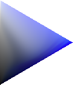
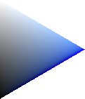
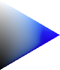

Vivid upper right, white upper left, black lower left. Every panel samples the same public hue, Reach and Level coordinates, and calls that model’s toXYZ. Display conversion is sRGB; clipped-pixel counts appear below each image. Full-gamut clipped pixels do not reveal original color differences. Release 1, when included, imports Beta 1 vivid XYZ by fromXYZ and reports remaining anchor difference. Read audit methods and limits. Quantitative diagnostics use original XYZ before display clipping.
Requested H 120°
Beta 1 · H 120° Display-clipped 0/8481Frozen joint · H 120° Display-clipped 0/8481Fresh seed (calibration) · H 120° Display-clipped 0/8481Visual-neutral: FAILED COMBVD · H 120° Display-clipped 0/8481Joint-graded: FAILED Beta 1 · H 120° Display-clipped 0/8481
Requested H 182.5°
Beta 1 · H 182.5° Display-clipped 0/8481Frozen joint · H 182.5° Display-clipped 0/8481Fresh seed (calibration) · H 182.5° Display-clipped 0/8481Visual-neutral: FAILED COMBVD · H 182.5° Display-clipped 0/8481Joint-graded: FAILED Beta 1 · H 182.5° Display-clipped 0/8481
Requested H 273°
Beta 1 · H 273° Display-clipped 0/8481

Frozen joint · H 273° Display-clipped 0/8481

Fresh seed (calibration) · H 273° Display-clipped 0/8481Visual-neutral: FAILED COMBVD · H 273° Display-clipped 0/8481

Joint-graded: FAILED Beta 1 · H 273° Display-clipped 0/8481